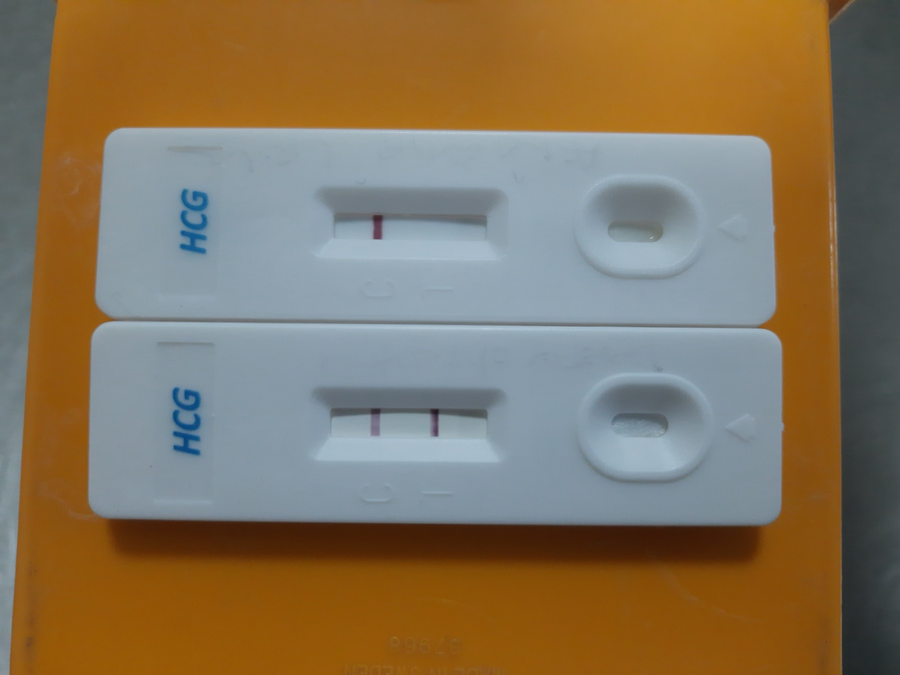

Página 3 · Parte A · Tríade (HERÓI H1)
Tríade: presunção · probabilidade · certeza
mãe · mama · sistêmico → presunção
ninho (útero · vagina · vulva) → probabilidade
ouvir ou sentir (+ ver no US) → certeza
Três degraus, não uma lista. Classificar o achado vem antes de qualquer epônimo decorado — e a fórmula curta do mnemônico é o motor que faz isso todo dia.
Por que organizar em três degraus
Nem todos os textos separam sinais de gravidez em presunção / probabilidade / certeza — alguns só listam. A separação é organização didática (não muda a fisiologia). Serve para uma coisa só: não chamar de certeza o que ainda é queixa materna ou sinal do ninho.
Tratar como “lista” sem degrau leva a dois erros opostos: subir a presunção (mama cheia de epônimos vira “quase certeza” no prontuário) ou descer a certeza (BCF ouvido vira “achado sugestivo”). O degrau é o que protege dos dois lados.
Presunção = mãe · mama · sistêmico
Presunção = tudo que é percebido pela mãe, ou é alteração mamária, ou é alteração sistêmica. Fórmula curta: mãe · mama · sistêmico → presunção.
Presunção = possibilidade de gravidez — pode ser, não prova. Exemplos-tipo: náusea matinal, mastalgia — sugerem, mas não fecham (náusea também pode ser gastrite e outras causas). O “pode ser” aqui não é retórica fraca: é o rótulo exato que se aplica.
Probabilidade = ninho (útero–vagina–vulva)
Probabilidade = sinais do ninho — alterações de útero, vagina e vulva (fisicamente mais próximas da gestação). Qualquer alteração de útero / vagina / vulva sobe o degrau para probabilidade, independente do epônimo.
Aqui mora a primeira virada do raciocínio: se o sinal for uterino, vaginal ou vulvar, ele não é presunção, é probabilidade. O epônimo não muda o degrau — o sítio muda. (Hegar, Chadwick, Goodell, Piscacek — todos probabilidade.)
Certeza = ouvir ou sentir (+ ver no US)
Certeza clínica = quando se consegue ouvir ou sentir a gravidez. Ouvir (sonar / Pinard) e sentir (movimentação pelo profissional · rechaço) entram como certeza no eixo clínico. No eixo de imagem, ver no ultrassom fecha certeza por visualização — tratado com o relógio US adiante (P10).
Organizar por degrau evita a pegadinha clássica de chamar de “certeza” o que ainda é queixa materna ou sinal do ninho. A palavra “certeza” muda conduta, linguagem com a paciente e o que se documenta. Errar o rótulo é errar o raciocínio.
| Degrau | Regra | Exemplos-âncora |
|---|---|---|
| Presunção | mãe · mama · sistêmico | atraso menstrual · náusea · Montgomery (aréola) · cloasma |
| Probabilidade | ninho: útero · vagina · vulva | Hegar (istmo) · Chadwick (vagina) · Goodell (colo) · Piscacek (útero) |
| Certeza | ouvir ou sentir (+ ver no US) | BCF ao sonar · MF pelo médico · Puzos · US com BCF |

A tríade ganha força quando se sabe ler a fita: uma faixa de controle (valida o teste) + segunda faixa (positivo). Sem faixa = inválido, não negativo. Esses são os eixos que fecham certeza — não a queixa, não a mama.
Urine Pregnancy Test Positive and Negative. Photo: Ajay Kumar Chaurasiya, 2020. Licensed under CC BY-SA 4.0. Source: https://commons.wikimedia.org/wiki/File:Urine_Pregnancy_Test_Positive_and_Negative.jpg
Quiz — fixação
Mastalgia + náusea + atraso menstrual, sem exame do ninho, classificam-se como:
- Gabarito C. O eixo da mama não sobe sozinho; contagem não vira certeza; multípara não muda o degrau do sintoma.
- (A) contagem não é classificador — três sintomas continuam sendo presunção.
- (B) confundir órgão com ninho: o ninho é útero/vagina/vulva, não mama.
- (D) paridade muda o contexto narrativo, não o semiológico — a regra da casa separa.
- Por que cair na B: “mama está perto da gravidez” é o raciocínio errado — a regra separa mama em presunção e ninho em probabilidade.
Arroxeamento vaginal, isoladamente, é:
- Gabarito B. Vagina é ninho: qualquer alteração de vagina sobe para probabilidade, com ou sem epônimo (Chadwick é o nome; o rótulo vem do sítio).
- (A) confundir sítio com tipo — vagina não é mãe, mama ou sistêmico.
- (C) certeza exige ouvir ou sentir a gestação, ou ver no US — não inspeção de cor.
- (D) o achado entra sim na tríade — o sítio é o classificador.
- Por que cair na A: mamar sintomas na categoria inicial (presunção) é a rota preguiçosa — mas o ninho tem categoria própria.